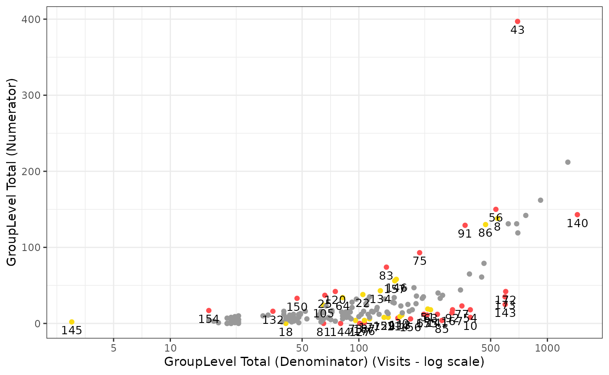

Cookbook
Cookbook.RmdIntroduction
This vignette contains sample code showing how to use the gsm extension gsm.simaerep using sample data from clindata.
In order to familiarize yourself with the gsm package,
please refer to the gsm
cookbook.
{gsm.simaerep} Functions
simaerep expects the cumulative count of numerator
events per denominator event per subject as input.
In this example we we are calculating the cumulative AE count per visit per patient per site.
dfInput <- Input_CumCount(
dfSubjects = clindata::rawplus_dm,
dfNumerator = clindata::rawplus_ae,
dfDenominator = clindata::rawplus_visdt %>% dplyr::mutate(visit_dt = lubridate::ymd(visit_dt)),
strSubjectCol = "subjid",
strGroupCol = "siteid",
strGroupLevel = "Site",
strNumeratorDateCol = "aest_dt",
strDenominatorDateCol = "visit_dt"
)
dfInput %>%
dplyr::filter(max(Numerator) > 1, .by = "SubjectID") %>%
head(25) %>%
knitr::kable()| SubjectID | GroupID | GroupLevel | Numerator | Denominator |
|---|---|---|---|---|
| 0486 | 10 | Site | 0 | 1 |
| 0486 | 10 | Site | 0 | 2 |
| 0486 | 10 | Site | 0 | 3 |
| 0486 | 10 | Site | 0 | 4 |
| 0486 | 10 | Site | 0 | 5 |
| 0486 | 10 | Site | 0 | 6 |
| 0486 | 10 | Site | 0 | 7 |
| 0486 | 10 | Site | 0 | 8 |
| 0486 | 10 | Site | 2 | 9 |
| 0486 | 10 | Site | 2 | 10 |
| 0486 | 10 | Site | 2 | 11 |
| 0486 | 10 | Site | 2 | 12 |
| 0486 | 10 | Site | 2 | 13 |
| 0486 | 10 | Site | 2 | 14 |
| 0486 | 10 | Site | 2 | 15 |
| 0486 | 10 | Site | 2 | 16 |
| 0486 | 10 | Site | 2 | 17 |
| 0486 | 10 | Site | 2 | 18 |
| 0486 | 10 | Site | 2 | 19 |
| 0486 | 10 | Site | 2 | 20 |
| 0486 | 10 | Site | 2 | 21 |
| 0489 | 10 | Site | 0 | 1 |
| 0489 | 10 | Site | 0 | 2 |
| 0489 | 10 | Site | 2 | 3 |
| 0489 | 10 | Site | 2 | 4 |
Now we can analyze the data using Analyze_Simaerep() and
add flags with Flag_Simaerep() which adds a Score between
-1 and 1. Positive values indicate the over-reporting probability and
negative values indicate the under-reporting probability.
ExpectedNumerator is the number of expected AEs for a site with the same patient configuration.
dfAnalyzed <- Analyze_Simaerep(dfInput)
dfFlagged <- Flag_Simaerep(dfAnalyzed, vThreshold = c(-0.99, -0.95, 0.95, 0.99))
#> ℹ Sorted dfFlagged using custom Flag order: 2.Sorted dfFlagged using custom Flag order: -2.Sorted dfFlagged using custom Flag order: 1.Sorted dfFlagged using custom Flag order: -1.Sorted dfFlagged using custom Flag order: 0.
dfFlagged %>%
arrange(Score) %>%
head(5) %>%
knitr::kable()| GroupID | GroupLevel | Numerator | Denominator | Metric | OverReportingProbability | UnderReportingProbability | Score | ExpectedNumerator | Flag |
|---|---|---|---|---|---|---|---|---|---|
| 10 | Site | 8 | 390 | 0.0205128 | 0 | 1 | -1 | 63.354 | -2 |
| 140 | Site | 143 | 1442 | 0.0991678 | 0 | 1 | -1 | 239.983 | -2 |
| 141 | Site | 12 | 261 | 0.0459770 | 0 | 1 | -1 | 44.401 | -2 |
| 143 | Site | 25 | 597 | 0.0418760 | 0 | 1 | -1 | 99.483 | -2 |
| 167 | Site | 14 | 312 | 0.0448718 | 0 | 1 | -1 | 53.884 | -2 |
| GroupID | GroupLevel | Numerator | Denominator | Metric | OverReportingProbability | UnderReportingProbability | Score | ExpectedNumerator | Flag |
|---|---|---|---|---|---|---|---|---|---|
| 132 | Site | 16 | 35 | 0.4571429 | 1 | 0 | 1 | 9.190 | 2 |
| 43 | Site | 397 | 695 | 0.5712230 | 1 | 0 | 1 | 119.042 | 2 |
| 75 | Site | 93 | 210 | 0.4428571 | 1 | 0 | 1 | 34.139 | 2 |
| 83 | Site | 74 | 140 | 0.5285714 | 1 | 0 | 1 | 22.858 | 2 |
| 91 | Site | 129 | 366 | 0.3524590 | 1 | 0 | 1 | 62.582 | 2 |
These results are compatible with the gsm package for
visualization.
`simaerep scores represent are related to the metric ratio do not use a metric based threshold for flagging. Therefore we do not need to calculate boundaries to pass to the plotting function.
gsm.kri::Visualize_Scatter(
dfFlagged,
dfBounds = NULL,
strGroupLabel = "GroupLevel",
strUnit = "Visits"
)
Widget_ScatterPlot(
dfFlagged,
dfBounds = NULL,
bDebug = FALSE
)
Widget_BarChart(
dfFlagged
)Report Building
We can create a workflow to create the gsm KRI
report.
Mapping
lRaw <- list(
Raw_SUBJ = clindata::rawplus_dm,
Raw_AE = clindata::rawplus_ae,
Raw_VISIT = clindata::rawplus_visdt,
Raw_PD = clindata::ctms_protdev,
Raw_ENROLL = clindata::rawplus_enroll,
Raw_SITE = clindata::ctms_site,
Raw_STUDY = clindata::ctms_study
)
mapping_wf <- gsm.core::MakeWorkflowList(
strNames = NULL,
strPath = system.file("workflow/1_mappings", package = "gsm.simaerep"),
strPackage = NULL
)
lIngest <- gsm.mapping::Ingest(lRaw, gsm.mapping::CombineSpecs(mapping_wf))
lMapped <- gsm.core::RunWorkflows(lWorkflows = mapping_wf, lData = lIngest)Metrics
metrics_wf <- gsm.core::MakeWorkflowList(
strNames = NULL,
strPath = system.file("workflow/2_metrics", package = "gsm.simaerep"),
strPackage = NULL
)
#> Warning: `ID` attribute does not match name of the file, kri0005.yaml.
lAnalyzed <- gsm.core::RunWorkflows(lWorkflows = metrics_wf, lData = lMapped)
#> Warning: The `nMinDenominator` argument of `Summarize()` is deprecated as of gsm.core
#> 1.0.0.
#> ℹ Please use the `nAccrualThreshold` and `strAccrualMetric` arguments in
#> `Flag()` instead
#> ℹ The deprecated feature was likely used in the gsm.core package.
#> Please report the issue at
#> <https://github.com/Gilead-BioStats/gsm.core/issues>.
#> This warning is displayed once every 8 hours.
#> Call `lifecycle::last_lifecycle_warnings()` to see where this warning was
#> generated.Report Generation - Workflow
reporting_wf <- gsm.core::MakeWorkflowList(
strNames = NULL,
strPath = system.file("workflow/3_reporting", package = "gsm.simaerep"),
strPackage = NULL
)
lReport <- gsm.core::RunWorkflows(
lWorkflows = reporting_wf,
lData = c(
lMapped,
list(
lAnalyzed = lAnalyzed,
lWorkflows = metrics_wf
)
)
)
module_wf_gsm <- gsm.core::MakeWorkflowList(
strNames = NULL,
strPath = system.file("workflow/4_modules", package = "gsm.simaerep"),
strPackage = NULL
)
# we cannot set a dynamic link to the report path in the yaml files
report_path <- system.file("report", "Report_KRI.Rmd", package = "gsm.simaerep")
n_steps <- length(module_wf_gsm$report_kri_site$steps)
module_wf_gsm$report_kri_site$steps[[n_steps]]$params$strInputPath <- report_path
lModule <- gsm.core::RunWorkflows(module_wf_gsm, lReport)
#> /opt/hostedtoolcache/pandoc/3.1.11/x64/pandoc +RTS -K512m -RTS /tmp/RtmprkwcC8/Report_KRI.knit.md --to html4 --from markdown+autolink_bare_uris+tex_math_single_backslash --output /home/runner/work/gsm.simaerep/gsm.simaerep/vignettes/kri_report_AAAA0000000_Site_20250618.html --lua-filter /home/runner/work/_temp/Library/rmarkdown/rmarkdown/lua/pagebreak.lua --lua-filter /home/runner/work/_temp/Library/rmarkdown/rmarkdown/lua/latex-div.lua --embed-resources --standalone --variable bs3=TRUE --section-divs --table-of-contents --toc-depth 3 --variable toc_float=1 --variable toc_selectors=h1,h2,h3 --variable toc_smooth_scroll=1 --variable toc_print=1 --template /home/runner/work/_temp/Library/rmarkdown/rmd/h/default.html --no-highlight --variable highlightjs=1 --variable theme=bootstrap --css styles.css --include-in-header /tmp/RtmprkwcC8/rmarkdown-str1f33404cd48b.htmlReport Generation - Script
dfMetrics <- gsm.reporting::MakeMetric(lWorkflows = metrics_wf)
lAnalyzed <- gsm.core::RunWorkflows(lWorkflows = metrics_wf, lData = lMapped)
dfResults <- gsm.reporting::BindResults(
lAnalysis = lAnalyzed,
strName = "Analysis_Summary",
dSnapshotDate = Sys.Date(),
strStudyID = "ABC-123"
)
dfGroups <- dplyr::bind_rows(
lMapped$Mapped_STUDY,
lMapped$Mapped_SITE,
lMapped$Country
)
dfBounds <- gsm.reporting::MakeBounds(
dfResults = dfResults,
dfMetrics = dfMetrics
)
# we use a different tooltip for the simaerep charts
lCharts_Identity <- gsm.kri::MakeCharts(
dfResults = dfResults %>%
filter(GroupLevel == "Site"),
dfMetrics = dfMetrics %>%
filter(GroupLevel == "Site", AnalysisType == "identity"),
dfGroups = dfGroups,
dfBounds = NULL,
bDebug = FALSE,
resultTooltipKeys = c(
"ExpectedNumerator",
"Score",
"Metric",
"Numerator",
"Denominator"
)
)
lCharts_Rate <- gsm.kri::MakeCharts(
dfResults = dfResults %>%
filter(GroupLevel == "Site"),
dfMetrics = dfMetrics %>%
filter(GroupLevel == "Site", AnalysisType == "rate"),
dfGroups = dfGroups,
dfBounds = dfBounds,
bDebug = FALSE
)
lCharts <- c(
lCharts_Identity,
lCharts_Rate
)
gsm.kri::Report_KRI(
lCharts = lCharts,
dfResults = dfResults,
dfGroups = dfGroups,
dfMetrics = dfMetrics,
strOutputFile = "report_kri_site.html",
strInputPath = system.file("report", "Report_KRI.Rmd", package = "gsm.simaerep")
)
#> /opt/hostedtoolcache/pandoc/3.1.11/x64/pandoc +RTS -K512m -RTS /tmp/RtmprkwcC8/Report_KRI.knit.md --to html4 --from markdown+autolink_bare_uris+tex_math_single_backslash --output /home/runner/work/gsm.simaerep/gsm.simaerep/vignettes/report_kri_site.html --lua-filter /home/runner/work/_temp/Library/rmarkdown/rmarkdown/lua/pagebreak.lua --lua-filter /home/runner/work/_temp/Library/rmarkdown/rmarkdown/lua/latex-div.lua --embed-resources --standalone --variable bs3=TRUE --section-divs --table-of-contents --toc-depth 3 --variable toc_float=1 --variable toc_selectors=h1,h2,h3 --variable toc_smooth_scroll=1 --variable toc_print=1 --template /home/runner/work/_temp/Library/rmarkdown/rmd/h/default.html --no-highlight --variable highlightjs=1 --variable theme=bootstrap --css styles.css --include-in-header /tmp/RtmprkwcC8/rmarkdown-str1f336df66e9f.html